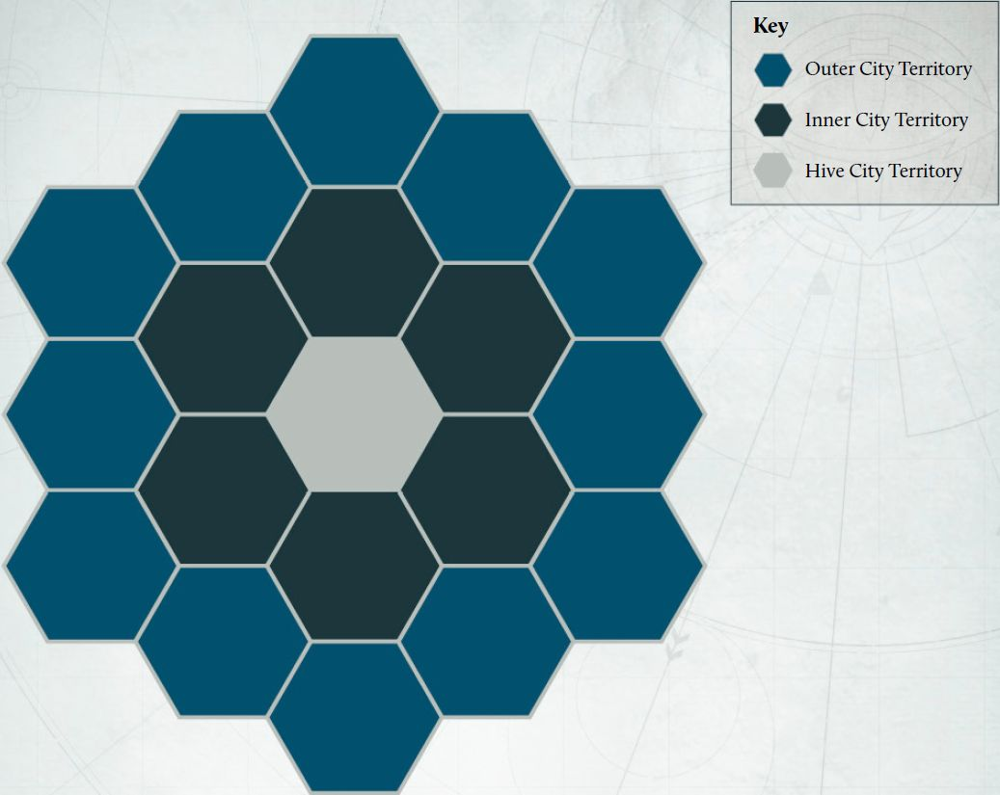
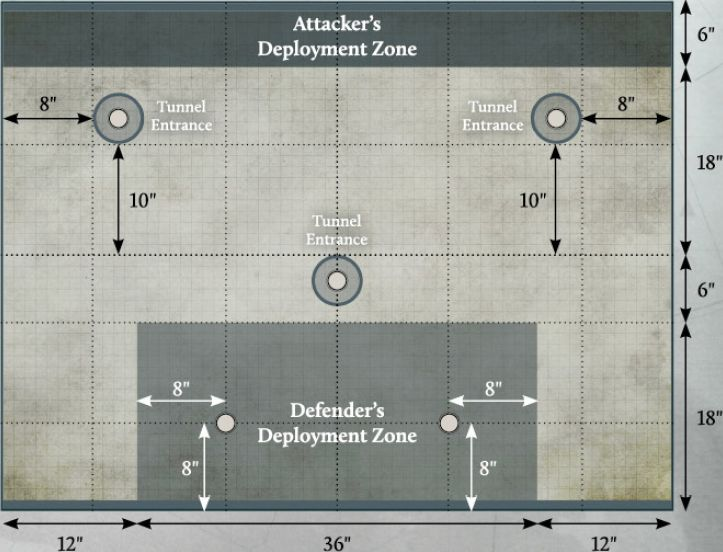

Conquest Campaign: The Second Battle for Nyrcon City
In this section you will find a variant of a Conquest campaign for six players, allowing you to refight the Traitor assault on Nyrcon City in 012.M31. This will include a number of changes to the Conquest campaign format required to fight this unique variant, as well as a new territory specific to Nyrcon City and a new mission.
Changes to the Conquest Campaign Format
The following changes apply when fighting the Second Battle of Nyrcon City campaign:
-
Instead of building a campaign map, the Second Battle for Nyrcon City campaign uses the Nyrcon City Conquest campaign map on page 128. This campaign map represents Nyrcon City and its surrounding areas and is divided into several rings of territories around the central Hive City territory, as shown on the diagram opposite. The six territories adjacent to the central Hive City territory are referred to as Inner City territories. The 12 territories around the outside of the map are referred to as Outer City territories.
-
Instead of selecting starting territories as normal, the Faction Commander for the Loyalist Faction starts the campaign in control of the central Hive City territory, one other Loyalist player starts the campaign in control of the Nyrcon City Mag-rail Terminus territory, and the remaining Loyalist player starts the campaign in control of the Spaceport territory. Each Traitor player can select one Outer City territory to be their starting territory.
-
In the first Campaign Cycle, the Traitor Faction is automatically the Invader (do not roll for this).
-
In addition to the campaign ending when a Faction reaches the required number of Campaign Points, the Second Battle of Nyrcon City campaign has the following additional end condition:
Sudden Death Ending
At the end of any Campaign Cycle, if the Traitor Faction controls the central Hive City territory and all six Inner City territories, then the campaign ends immediately and the Traitor Faction is victorious, regardless of Campaign Point totals.

New Territory
The following additional territory is in use in the Second Battle for Nyrcon City campaign:
Nyrcon City Mag-rail Terminus
| Campaign Points | Terrain Type | Requisition Points |
|---|---|---|
| 3 | Urban (Medium) | 20 |
Special Rules
When Invading, a player that controls the Nyrcon City Mag-rail Terminus territory may invade any Inner City territory rather than just those adjacent to a territory their Faction controls. When a battle is fought over the Nyrcon City Mag-rail Terminus territory, do not roll for a Mission. Instead, play the Seize the Terminal mission (see page 86). The player Protecting this territory is always the Defender in this Mission.
Additional Mission
In this section you will find an additional Mission for use in The Second Battle of Nyrcon City campaign. This uses the same Mission sequence and rules as the Matched Play Missions found in the Legions Imperialis Rulebook, unless otherwise specified in this Mission. Any changes to this process will be listed under 'Mission Specifics' for this Mission.
SEIZE THE TERMINAL
Mission Specifics
In this Mission, the Defender is considered to have control of the battlefield and must deploy all of their Detachments within the Defender's deployment zone (with the exception of any in Reserves). The Attacker can deploy any of their Detachments in Reserves. The remainder of their Detachments must deploy within the Attacker's deployment zone.
Instead of determining Secondary Objectives as normal:
-
The Attacker automatically has the Plant the Standard Secondary Objective.
-
The Defender automatically has the Collapse the Tunnels Secondary Objective (see opposite).
Mag-rail Tunnels
When terrain is being deployed, players should first place three Tunnel Entrance markers as shown on the deployment map. The easiest way to do this is to place three spare 5" Blast templates on the battlefield. When Objective markers are deployed, three of these will be placed on top of the Tunnel Entrance markers, at the centre of each one.
The edge of each of these Tunnel Entrance markers is treated as being an additional battlefield edge for the Attacker for the purposes of Reserves, but not for Fleeing.
Fleeing
In this mission, while a tunnel entrance is on the battlefield, the edge of each of these is treated as one of the Attacker's battlefield edges, as well as the marked edge of the battlefield. When a Detachment from the Attacker's Army flees, determine which of the Attacker's battlefield edges is closest to the majority of models in that Detachment. Each model in that Detachment must move towards that battlefield edge. If there is no majority, the controlling player should randomise which battlefield edge that Detachment flees towards.
Secondary Objective
Collapse the Tunnels
At the end of the Calculate Victory Points stage of each End phase, if the Defender controls any of the Objective markers that are on a Tunnel Entrance marker and that Objective marker is Uncontested, they can collapse that tunnel. If they do, remove that Tunnel Entrance marker (but not the Objective marker). That Tunnel Entrance marker is said to have been collapsed, and is no longer treated as an additional battlefield edge for the Attacker.
At the end of the battle, the player with this Secondary Objective scores 5 VPs for each Tunnel Entrance that has been collapsed.
Scoring
At the end of each round:
-
The Attacker scores 3 VPs for each Uncontested Objective marker that they control. They score 5 VPs instead if that Objective is within the Defender's deployment zone.
-
The Defender scores 2 VPs for each Uncontested Objective marker that they control.
At the end of the battle:
- Each player scores 3 VPs for each Uncontested Objective marker that is not within the Defender's deployment zone that they control and 5 VPs for each Uncontested Objective marker that is within the Defender's deployment zone that they control.
